Library › Topics › Psychology & People
Everything on psychology and people
Why humans do the strange things they do, including you: 107 books on the mind, bias, habits of thought and the people around you.
107 BOOKS · ALL FREE · AUDIO IN 26 LANGUAGES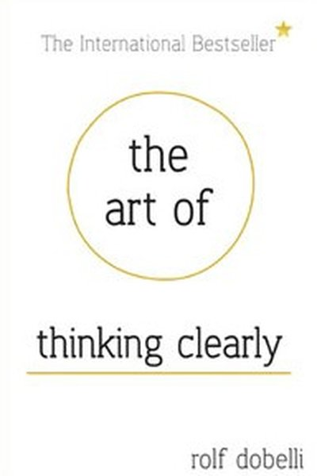
The Art of Thinking ClearlyRolf Dobelli · 2011Your brain cuts corners - 99 ways. Learn the shortcuts, and you'll stop being fooled by your own mind.8 min · 6 lessons · free summaryThinking in SystemsDonella H. Meadows · 2008Stop blaming people and events - behavior comes from structure. Learn to see stocks, flows, and feedback loops8 min · 6 lessons · free summary Games People PlayEric Berne · 1964Every conversation has two layers: the overt exchange and the hidden game underneath. Berne maps the recurring8 min · 10 lessons · free summary
Games People PlayEric Berne · 1964Every conversation has two layers: the overt exchange and the hidden game underneath. Berne maps the recurring8 min · 10 lessons · free summary MindsetCarol S. Dweck · 2006In a fixed mindset, failure defines you. In a growth mindset, failure informs you. The belief itself changes w8 min · 6 lessons · free summary
MindsetCarol S. Dweck · 2006In a fixed mindset, failure defines you. In a growth mindset, failure informs you. The belief itself changes w8 min · 6 lessons · free summary Psychology of Intelligence AnalysisRichards J. Heuer Jr. · 1999Heuer's landmark work on the cognitive traps of analysis: how our minds deceive us, and the structured techniq8 min · 6 lessons · free summaryThe Righteous MindJonathan Haidt · 2012Intuitions come first, reasoning second. Understand the six moral taste buds and you'll finally get why people8 min · 6 lessons · free summary
Psychology of Intelligence AnalysisRichards J. Heuer Jr. · 1999Heuer's landmark work on the cognitive traps of analysis: how our minds deceive us, and the structured techniq8 min · 6 lessons · free summaryThe Righteous MindJonathan Haidt · 2012Intuitions come first, reasoning second. Understand the six moral taste buds and you'll finally get why people8 min · 6 lessons · free summary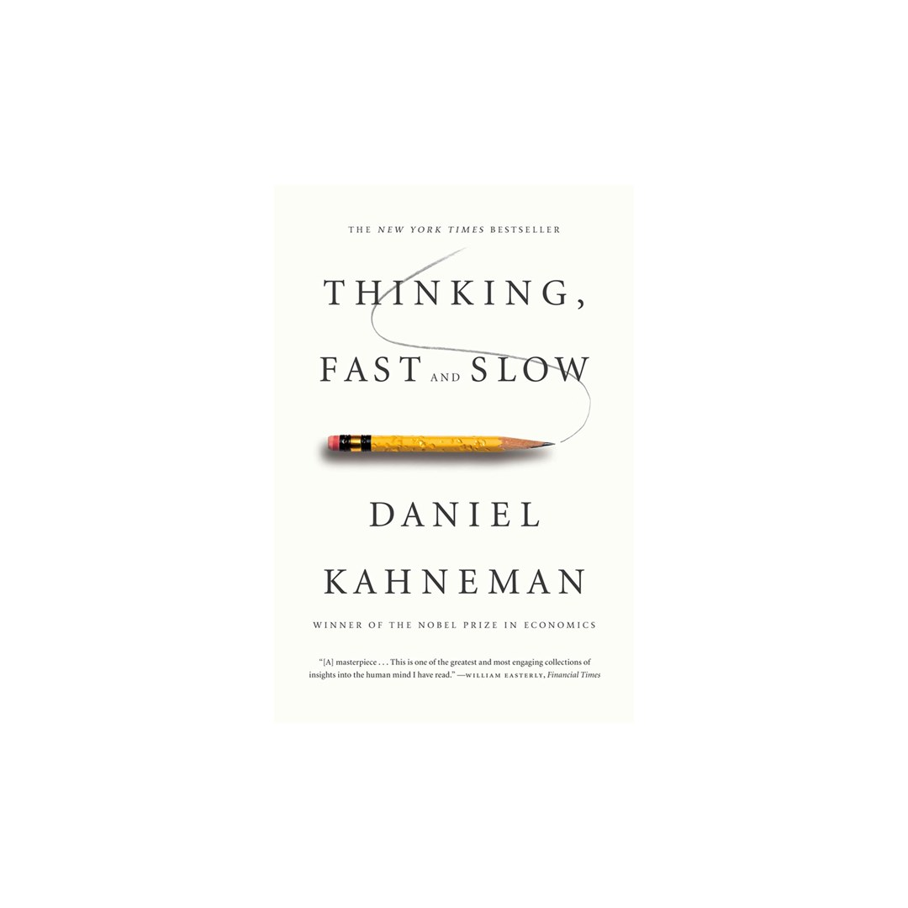
Thinking, Fast and SlowDaniel Kahneman · 2011Your fast, intuitive System 1 runs your life; your slow, rational System 2 mostly just approves its drafts. Kn8 min · 6 lessons · free summary How to Win Friends & Influence PeopleDale Carnegie · 1936You can make more friends in two months by becoming interested in other people than in two years trying to get11 min · 8 lessons · free summary
How to Win Friends & Influence PeopleDale Carnegie · 1936You can make more friends in two months by becoming interested in other people than in two years trying to get11 min · 8 lessons · free summary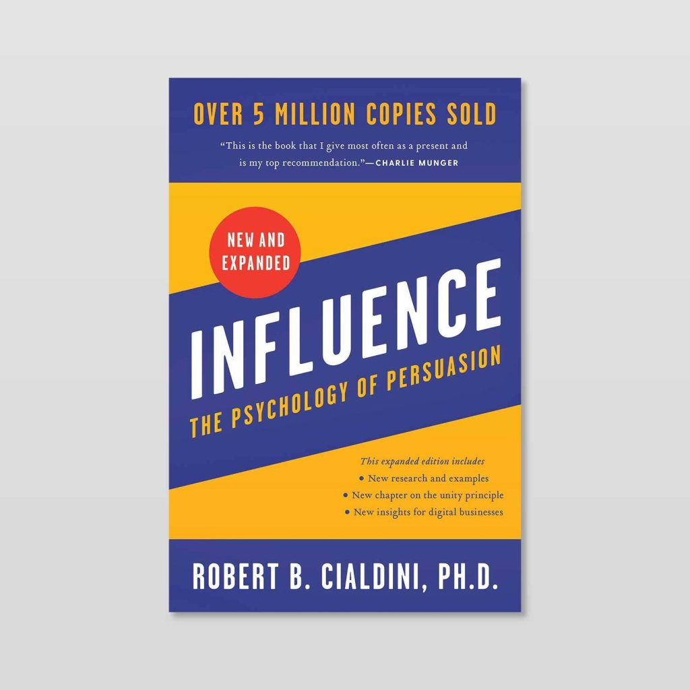
Influence: The Psychology of PersuasionRobert B. Cialdini · 1984Persuasion runs on fixed psychological triggers: reciprocity, commitment, social proof, liking, authority, sca9 min · 7 lessons · free summary Nobody Is Thinking About YouUnknown · 2026You rehearse the message four times before sending. You replay the meeting comment for three days. Here is the10 min · 10 lessons · free summary
Nobody Is Thinking About YouUnknown · 2026You rehearse the message four times before sending. You replay the meeting comment for three days. Here is the10 min · 10 lessons · free summary The Scrolled MindUnknown · 2026Your attention is the product being sold, your focus is the resource being mined, and nobody signed up for the10 min · 10 lessons · free summary
The Scrolled MindUnknown · 2026Your attention is the product being sold, your focus is the resource being mined, and nobody signed up for the10 min · 10 lessons · free summary The Undoing ProjectMichael Lewis · 2016How two brilliant, mismatched friends discovered that the mind is not logical - and changed how we think about7 min · 9 lessons · free summary
The Undoing ProjectMichael Lewis · 2016How two brilliant, mismatched friends discovered that the mind is not logical - and changed how we think about7 min · 9 lessons · free summary Thinking in BetsAnnie Duke · 2018Every decision is a bet. Stop judging decisions by outcomes - judge them by the quality of the process.8 min · 6 lessons · free summary
Thinking in BetsAnnie Duke · 2018Every decision is a bet. Stop judging decisions by outcomes - judge them by the quality of the process.8 min · 6 lessons · free summary A Mind for NumbersBarbara Oakley · 2014Math and science aren't about talent - they're about two modes of thinking, chunks, and the courage to be a be8 min · 6 lessons · free summary
A Mind for NumbersBarbara Oakley · 2014Math and science aren't about talent - they're about two modes of thinking, chunks, and the courage to be a be8 min · 6 lessons · free summary Black Box ThinkingMatthew Syed · 2015Aviation treats every failure as data and got massively safer; healthcare and other blame cultures bury errors10 min · 10 lessons · free summary
Black Box ThinkingMatthew Syed · 2015Aviation treats every failure as data and got massively safer; healthcare and other blame cultures bury errors10 min · 10 lessons · free summary NoiseDaniel Kahneman, Olivier Sibony & Cass Sunstein · 2021Where there is judgment, there is noise; the fix is not better people but better decision hygiene.7 min · 9 lessons · free summary
NoiseDaniel Kahneman, Olivier Sibony & Cass Sunstein · 2021Where there is judgment, there is noise; the fix is not better people but better decision hygiene.7 min · 9 lessons · free summary Surrounded by IdiotsThomas Erikson · 2014People aren't idiots - they're just a different color. Learn Red, Yellow, Green, and Blue, and communication f11 min · 8 lessons · free summary
Surrounded by IdiotsThomas Erikson · 2014People aren't idiots - they're just a different color. Learn Red, Yellow, Green, and Blue, and communication f11 min · 8 lessons · free summary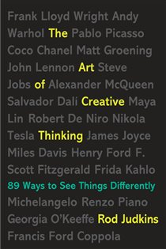
The Art of Creative ThinkingRod Judkins · 2015Creativity isn't a gift - it's a way of operating: embrace uncertainty, mine your failures, and start before y9 min · 7 lessons · free summary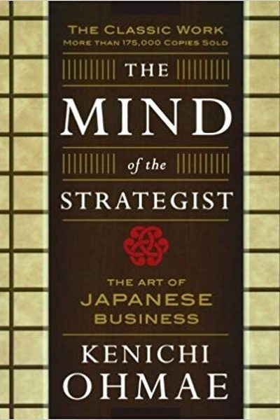
The Mind of the StrategistKenichi Ohmae · 1982Strategy is not analysis - it's a state of mind. The best strategists think in insights, not spreadsheets.8 min · 6 lessons · free summary Being IndianPavan K. Varma · 2004Indians juggle paradoxes - family duty and personal ambition, deep faith and hard pragmatism - and that juggli8 min · 6 lessons · free summary
Being IndianPavan K. Varma · 2004Indians juggle paradoxes - family duty and personal ambition, deep faith and hard pragmatism - and that juggli8 min · 6 lessons · free summary BlinkMalcolm Gladwell · 2005Gladwell's exploration of thin-slicing: the instant judgments your unconscious makes in two seconds are often 8 min · 6 lessons · free summary
BlinkMalcolm Gladwell · 2005Gladwell's exploration of thin-slicing: the instant judgments your unconscious makes in two seconds are often 8 min · 6 lessons · free summary Don't Lose Your Mind, Lose Your WeightRujuta Diwekar · 2009Rujuta Diwekar's commonsense Indian guide: eat local and seasonal, never skip meals, train consistently, sleep9 min · 7 lessons · free summary
Don't Lose Your Mind, Lose Your WeightRujuta Diwekar · 2009Rujuta Diwekar's commonsense Indian guide: eat local and seasonal, never skip meals, train consistently, sleep9 min · 7 lessons · free summary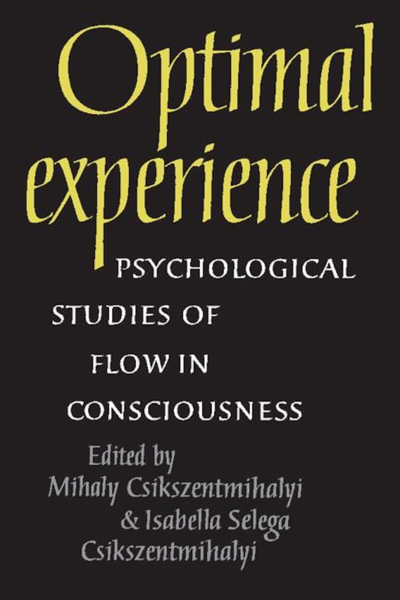
FlowMihaly Csikszentmihalyi · 1990The best moments of your life aren't relaxation - they're flow: stretched to your limits, self forgotten, time8 min · 6 lessons · free summary Give and TakeAdam Grant · 2013The most successful people are givers - generous with help, knowledge and credit - who protect themselves from8 min · 6 lessons · free summary
Give and TakeAdam Grant · 2013The most successful people are givers - generous with help, knowledge and credit - who protect themselves from8 min · 6 lessons · free summary How to Talk to AnyoneLeil Lowndes · 2003People decide who you are in seconds - and every second is coachable: the smile, the eyes, the posture, the fi8 min · 6 lessons · free summary
How to Talk to AnyoneLeil Lowndes · 2003People decide who you are in seconds - and every second is coachable: the smile, the eyes, the posture, the fi8 min · 6 lessons · free summary Ignited MindsA.P.J. Abdul Kalam · 2002A.P.J. Abdul Kalam's message to young India - five missions for a developed nation, and the truth that ignited8 min · 6 lessons · free summary
Ignited MindsA.P.J. Abdul Kalam · 2002A.P.J. Abdul Kalam's message to young India - five missions for a developed nation, and the truth that ignited8 min · 6 lessons · free summary India After GandhiRamachandra Guha · 2007Ramachandra Guha's landmark history of independent India - how a fragile, divided nation held together, and th9 min · 7 lessons · free summary
India After GandhiRamachandra Guha · 2007Ramachandra Guha's landmark history of independent India - how a fragile, divided nation held together, and th9 min · 7 lessons · free summary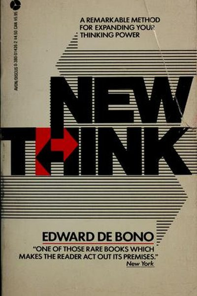
Lateral ThinkingEdward de Bono · 1970Vertical thinking digs the same hole deeper. Lateral thinking digs a new hole - on purpose.8 min · 6 lessons · free summary Lost ConnectionsJohann Hari · 2018Depression and anxiety are not just broken brain chemistry: they are largely responses to disconnection, from 10 min · 10 lessons · free summary
Lost ConnectionsJohann Hari · 2018Depression and anxiety are not just broken brain chemistry: they are largely responses to disconnection, from 10 min · 10 lessons · free summary MeditationsMarcus Aurelius · 180You have power over your mind - not outside events. Realize this, and you will find strength.8 min · 6 lessons · free summary
MeditationsMarcus Aurelius · 180You have power over your mind - not outside events. Realize this, and you will find strength.8 min · 6 lessons · free summary My GitaDevdutt Pattanaik · 2015Devdutt Pattanaik reads the Gita as a map of the human mind - duty, detachment, desire and death explained thr9 min · 7 lessons · free summary
My GitaDevdutt Pattanaik · 2015Devdutt Pattanaik reads the Gita as a map of the human mind - duty, detachment, desire and death explained thr9 min · 7 lessons · free summary Nudge: Improving Decisions About Health, Wealth, and HappinessRichard Thaler & Cass Sunstein · 2008You can't stop being human - but you can design your environment so being human leads you the right way.8 min · 6 lessons · free summary
Nudge: Improving Decisions About Health, Wealth, and HappinessRichard Thaler & Cass Sunstein · 2008You can't stop being human - but you can design your environment so being human leads you the right way.8 min · 6 lessons · free summary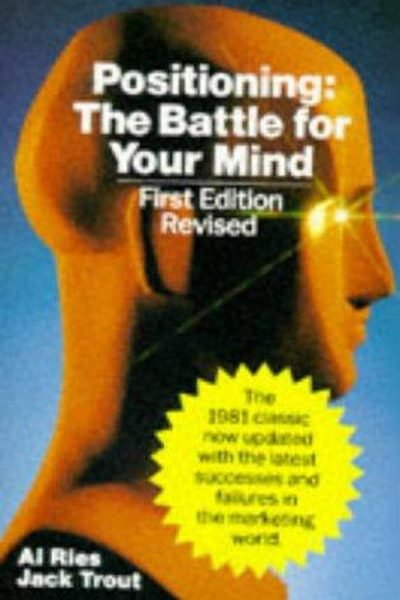
Positioning: The Battle for Your MindAl Ries & Jack Trout · 1981You don't win markets with better products. You win the first slot in the customer's mind - then defend it.8 min · 6 lessons · free summary QuietSusan Cain · 2012The Extrovert Ideal runs our schools, offices, and stages - but solitude built the theory of relativity, and q8 min · 6 lessons · free summary
QuietSusan Cain · 2012The Extrovert Ideal runs our schools, offices, and stages - but solitude built the theory of relativity, and q8 min · 6 lessons · free summary RangeDavid Epstein · 2019The Tiger Woods path (specialize at 2) wins in golf. Almost everywhere else, the Roger Federer path (sample, q8 min · 6 lessons · free summary
RangeDavid Epstein · 2019The Tiger Woods path (specialize at 2) wins in golf. Almost everywhere else, the Roger Federer path (sample, q8 min · 6 lessons · free summary Secrets of the Millionaire MindT. Harv Eker · 2005Give me five minutes and I'll predict your financial future: it's your money blueprint - installed young, runn8 min · 6 lessons · free summary
Secrets of the Millionaire MindT. Harv Eker · 2005Give me five minutes and I'll predict your financial future: it's your money blueprint - installed young, runn8 min · 6 lessons · free summary Talk Like TEDCarmine Gallo · 2014Ideas are the currency of the 21st century - and the speakers who move the world master passion, story, and th8 min · 6 lessons · free summary
Talk Like TEDCarmine Gallo · 2014Ideas are the currency of the 21st century - and the speakers who move the world master passion, story, and th8 min · 6 lessons · free summary Talking to StrangersMalcolm Gladwell · 2019We default to truth, believe faces are windows, and ignore context - three bugs that explain history's greates8 min · 6 lessons · free summary
Talking to StrangersMalcolm Gladwell · 2019We default to truth, believe faces are windows, and ignore context - three bugs that explain history's greates8 min · 6 lessons · free summary The 7 Habits of Highly Effective PeopleStephen R. Covey · 1989Effectiveness isn't a technique - it's character. Win the private battle first, then the public one.9 min · 7 lessons · free summary
The 7 Habits of Highly Effective PeopleStephen R. Covey · 1989Effectiveness isn't a technique - it's character. Win the private battle first, then the public one.9 min · 7 lessons · free summary The Behavior GapCarl Richards · 2012The biggest risk in your portfolio is you. Simple rules - plan, automate, simplify - close the behavior gap.8 min · 6 lessons · free summary
The Behavior GapCarl Richards · 2012The biggest risk in your portfolio is you. Simple rules - plan, automate, simplify - close the behavior gap.8 min · 6 lessons · free summary The Body Keeps the ScoreBessel van der Kolk · 2014Trauma lives in the body, not just the mind. Heal it through the body - movement, breath, connection, and safe8 min · 6 lessons · free summary
The Body Keeps the ScoreBessel van der Kolk · 2014Trauma lives in the body, not just the mind. Heal it through the body - movement, breath, connection, and safe8 min · 6 lessons · free summary The Charisma MythOlivia Fox Cabane · 2012Charisma isn't magic or genetics - it's three trainable signals: presence, power, and warmth. And it starts in8 min · 6 lessons · free summary
The Charisma MythOlivia Fox Cabane · 2012Charisma isn't magic or genetics - it's three trainable signals: presence, power, and warmth. And it starts in8 min · 6 lessons · free summary The Courage to Be DislikedIchiro Kishimi & Fumitake Koga · 2013Your trauma doesn't determine you, your problems are all interpersonal, and freedom costs exactly one thing: b8 min · 6 lessons · free summary
The Courage to Be DislikedIchiro Kishimi & Fumitake Koga · 2013Your trauma doesn't determine you, your problems are all interpersonal, and freedom costs exactly one thing: b8 min · 6 lessons · free summary The Happiness AdvantageShawn Achor · 2010Happiness doesn't follow success - it fuels it. Train your brain to be positive first, and performance follows9 min · 7 lessons · free summary
The Happiness AdvantageShawn Achor · 2010Happiness doesn't follow success - it fuels it. Train your brain to be positive first, and performance follows9 min · 7 lessons · free summary The Happiness HypothesisJonathan Haidt · 2006Jonathan Haidt tests ten ancient ideas about happiness against modern psychology - and finds that the old wisd9 min · 7 lessons · free summary
The Happiness HypothesisJonathan Haidt · 2006Jonathan Haidt tests ten ancient ideas about happiness against modern psychology - and finds that the old wisd9 min · 7 lessons · free summary The Magic of Thinking BigDavid J. Schwartz · 1959Believe it can be done. The size of your success is set by the size of your belief - and excusitis is the fail8 min · 6 lessons · free summary
The Magic of Thinking BigDavid J. Schwartz · 1959Believe it can be done. The size of your success is set by the size of your belief - and excusitis is the fail8 min · 6 lessons · free summary The Power of Positive ThinkingNorman Vincent Peale · 1952Change your thoughts and you change your world: believe in yourself, empty the fear, picture the outcome, and 8 min · 6 lessons · free summary
The Power of Positive ThinkingNorman Vincent Peale · 1952Change your thoughts and you change your world: believe in yourself, empty the fear, picture the outcome, and 8 min · 6 lessons · free summary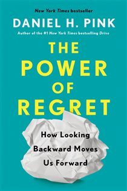
The Power of RegretDaniel H. Pink · 2022'No regrets' is a philosophy for people who don't want to learn. Regret is your clearest data about what you v8 min · 6 lessons · free summary The Power of Your Subconscious MindJoseph Murphy · 1963Your subconscious is soil: it grows whatever you plant - thoughts of success or seeds of fear. Choose the seed9 min · 7 lessons · free summary
The Power of Your Subconscious MindJoseph Murphy · 1963Your subconscious is soil: it grows whatever you plant - thoughts of success or seeds of fear. Choose the seed9 min · 7 lessons · free summary The Psychology of MoneyMorgan Housel · 2020Doing well with money is a soft skill: how you behave beats what you know. Every time.11 min · 8 lessons · free summary
The Psychology of MoneyMorgan Housel · 2020Doing well with money is a soft skill: how you behave beats what you know. Every time.11 min · 8 lessons · free summary The Psychology of SellingBrian Tracy · 2004Selling is 80% psychology: theirs (they buy feelings, then justify) and yours (self-concept sets your income).8 min · 6 lessons · free summary
The Psychology of SellingBrian Tracy · 2004Selling is 80% psychology: theirs (they buy feelings, then justify) and yours (self-concept sets your income).8 min · 6 lessons · free summary Think AgainAdam Grant · 2021Intelligence is the ability to think; wisdom is the ability to RETHINK. Be the scientist, not the preacher, pr8 min · 6 lessons · free summaryWings of FireA.P.J. Abdul Kalam · 1999A boat-owner's son from Rameswaram becomes the father of India's missile program - proof that dreams, mentors,8 min · 6 lessons · free summary
Think AgainAdam Grant · 2021Intelligence is the ability to think; wisdom is the ability to RETHINK. Be the scientist, not the preacher, pr8 min · 6 lessons · free summaryWings of FireA.P.J. Abdul Kalam · 1999A boat-owner's son from Rameswaram becomes the father of India's missile program - proof that dreams, mentors,8 min · 6 lessons · free summary 12 Rules for LifeJordan B. Peterson · 2018Life is suffering; the antidote is responsibility. Fix yourself first, aim at meaning, and tell the truth - or8 min · 6 lessons · free summary
12 Rules for LifeJordan B. Peterson · 2018Life is suffering; the antidote is responsibility. Fix yourself first, aim at meaning, and tell the truth - or8 min · 6 lessons · free summary 21 Lessons for the 21st CenturyYuval Noah Harari · 2018Yuval Noah Harari tackles the most urgent questions of our age - technology, truth, war, religion, meaning - a9 min · 7 lessons · free summary
21 Lessons for the 21st CenturyYuval Noah Harari · 2018Yuval Noah Harari tackles the most urgent questions of our age - technology, truth, war, religion, meaning - a9 min · 7 lessons · free summary A Guide to the Good LifeWilliam B. Irvine · 2008Irvine's modern Stoicism: aim at tranquillity, not happiness, and rehearse loss to love the present.7 min · 9 lessons · free summary
A Guide to the Good LifeWilliam B. Irvine · 2008Irvine's modern Stoicism: aim at tranquillity, not happiness, and rehearse loss to love the present.7 min · 9 lessons · free summary AttachedAmir Levine and Rachel Heller · 2010Adult love runs on attachment styles, secure, anxious or avoidant, formed in childhood and running silently in9 min · 10 lessons · free summary
AttachedAmir Levine and Rachel Heller · 2010Adult love runs on attachment styles, secure, anxious or avoidant, formed in childhood and running silently in9 min · 10 lessons · free summary Being MortalAtul Gawande · 2014The goal of care is not only to add years to life but life to years: Gawande's manifesto on mortality and dign7 min · 9 lessons · free summary
Being MortalAtul Gawande · 2014The goal of care is not only to add years to life but life to years: Gawande's manifesto on mortality and dign7 min · 9 lessons · free summary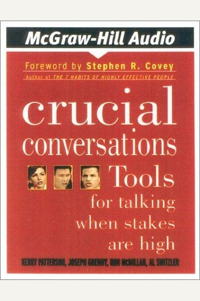
Crucial ConversationsKerry Patterson, Joseph Grenny, Ron McMillan, Al Switzler · 2002The quality of your relationships and results is set by how you handle the conversations you'd rather avoid.8 min · 6 lessons · free summary David and GoliathMalcolm Gladwell · 2013Giants are not what they seem - their strengths have hidden weaknesses, and underdogs win by refusing to fight8 min · 6 lessons · free summary
David and GoliathMalcolm Gladwell · 2013Giants are not what they seem - their strengths have hidden weaknesses, and underdogs win by refusing to fight8 min · 6 lessons · free summary DecisiveChip Heath & Dan Heath · 2013Your decisions are sabotaged by four villains - widen your options, reality-test, attain distance, prepare to 8 min · 6 lessons · free summary
DecisiveChip Heath & Dan Heath · 2013Your decisions are sabotaged by four villains - widen your options, reality-test, attain distance, prepare to 8 min · 6 lessons · free summary Dopamine NationDr. Anna Lembke · 2021Pleasure and pain share one brain circuit - press pleasure too often and the brain fights back with pain. The 8 min · 6 lessons · free summary
Dopamine NationDr. Anna Lembke · 2021Pleasure and pain share one brain circuit - press pleasure too often and the brain fights back with pain. The 8 min · 6 lessons · free summary Dreamers: How Young Indians Are Changing the WorldSnigdha Poonam · 2018A journalist's field report from tier-2 and tier-3 India: the ambition economy of young strivers, its hustle c11 min · 8 lessons · free summary
Dreamers: How Young Indians Are Changing the WorldSnigdha Poonam · 2018A journalist's field report from tier-2 and tier-3 India: the ambition economy of young strivers, its hustle c11 min · 8 lessons · free summary DriveDaniel H. Pink · 2009Rewards work for simple tasks and sabotage creative ones. Real motivation runs on autonomy, mastery, and purpo8 min · 6 lessons · free summary
DriveDaniel H. Pink · 2009Rewards work for simple tasks and sabotage creative ones. Real motivation runs on autonomy, mastery, and purpo8 min · 6 lessons · free summary Emotional IntelligenceDaniel Goleman · 1995IQ gets you hired; EQ gets you promoted, married well, and mentally free. And unlike IQ, it's trainable for li8 min · 6 lessons · free summary
Emotional IntelligenceDaniel Goleman · 1995IQ gets you hired; EQ gets you promoted, married well, and mentally free. And unlike IQ, it's trainable for li8 min · 6 lessons · free summary FactfulnessHans Rosling · 2018The world is improving far faster than we believe - and our dramatic instincts keep lying to us. Get the facts8 min · 6 lessons · free summary
FactfulnessHans Rosling · 2018The world is improving far faster than we believe - and our dramatic instincts keep lying to us. Get the facts8 min · 6 lessons · free summary FreakonomicsSteven D. Levitt & Stephen J. Dubner · 2005The world is driven by incentives more than morality - and asking the wrong questions hides the real answers.8 min · 6 lessons · free summaryGritAngela Duckworth · 2016Talent × effort = skill. Skill × effort = achievement. Effort counts twice - and grit, not genius, predicts wh8 min · 6 lessons · free summary
FreakonomicsSteven D. Levitt & Stephen J. Dubner · 2005The world is driven by incentives more than morality - and asking the wrong questions hides the real answers.8 min · 6 lessons · free summaryGritAngela Duckworth · 2016Talent × effort = skill. Skill × effort = achievement. Effort counts twice - and grit, not genius, predicts wh8 min · 6 lessons · free summary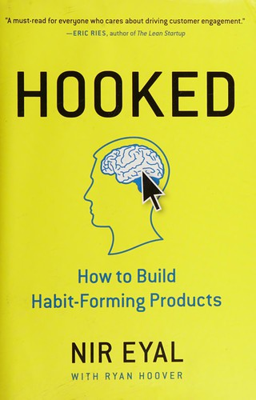
Hooked: How to Build Habit-Forming ProductsNir Eyal · 2014Nir Eyal's Hook Model: trigger, action, variable reward, investment; the four-phase loop behind habit-forming 9 min · 8 lessons · free summary IkigaiHéctor García & Francesc Miralles · 2016Your ikigai - the reason you get up in the morning - sits where passion, mission, vocation, and profession ove9 min · 7 lessons · free summary
IkigaiHéctor García & Francesc Miralles · 2016Your ikigai - the reason you get up in the morning - sits where passion, mission, vocation, and profession ove9 min · 7 lessons · free summary Lost and Founder: A Painfully Honest Field Guide to the Startup WorldRand Fishkin · 2018Rand Fishkin's painfully honest account of building Moz: founder depression, VC misalignment, the 'pretend gro11 min · 8 lessons · free summary
Lost and Founder: A Painfully Honest Field Guide to the Startup WorldRand Fishkin · 2018Rand Fishkin's painfully honest account of building Moz: founder depression, VC misalignment, the 'pretend gro11 min · 8 lessons · free summary Man's Search for MeaningViktor E. Frankl · 1946Everything can be taken from a man but one thing: the freedom to choose one's attitude in any given set of cir9 min · 7 lessons · free summary
Man's Search for MeaningViktor E. Frankl · 1946Everything can be taken from a man but one thing: the freedom to choose one's attitude in any given set of cir9 min · 7 lessons · free summary MasteryRobert Greene · 2012Mastery isn't genetics - it's a repeatable path: find your life's task, serve the apprenticeship, absorb mento8 min · 6 lessons · free summary
MasteryRobert Greene · 2012Mastery isn't genetics - it's a repeatable path: find your life's task, serve the apprenticeship, absorb mento8 min · 6 lessons · free summary Maybe You Should Talk to SomeoneLori Gottlieb · 2019A therapist loses her boyfriend, her identity and her footing, and goes to therapy herself. Behind the wall of11 min · 10 lessons · free summary
Maybe You Should Talk to SomeoneLori Gottlieb · 2019A therapist loses her boyfriend, her identity and her footing, and goes to therapy herself. Behind the wall of11 min · 10 lessons · free summary My Experiments with TruthMahatma Gandhi · 1927The most honest autobiography ever written: a seeker's laboratory notes on truth, self-rule and simplicity.7 min · 10 lessons · free summary
My Experiments with TruthMahatma Gandhi · 1927The most honest autobiography ever written: a seeker's laboratory notes on truth, self-rule and simplicity.7 min · 10 lessons · free summary Nonviolent CommunicationMarshall B. Rosenberg · 2003Behind every criticism is an unmet need trying to speak. Learn the OFNR grammar - observe, feel, need, request8 min · 6 lessons · free summary
Nonviolent CommunicationMarshall B. Rosenberg · 2003Behind every criticism is an unmet need trying to speak. Learn the OFNR grammar - observe, feel, need, request8 min · 6 lessons · free summary NudgeRichard H. Thaler & Cass R. Sunstein · 2008A nudge is any small change to the choice environment that predictably improves decisions, without banning any7 min · 9 lessons · free summary
NudgeRichard H. Thaler & Cass R. Sunstein · 2008A nudge is any small change to the choice environment that predictably improves decisions, without banning any7 min · 9 lessons · free summary On the Shortness of LifeSeneca · 49You are not given a short life; you are given a life, and you squander it - Seneca's timeless indictment.7 min · 9 lessons · free summary
On the Shortness of LifeSeneca · 49You are not given a short life; you are given a life, and you squander it - Seneca's timeless indictment.7 min · 9 lessons · free summary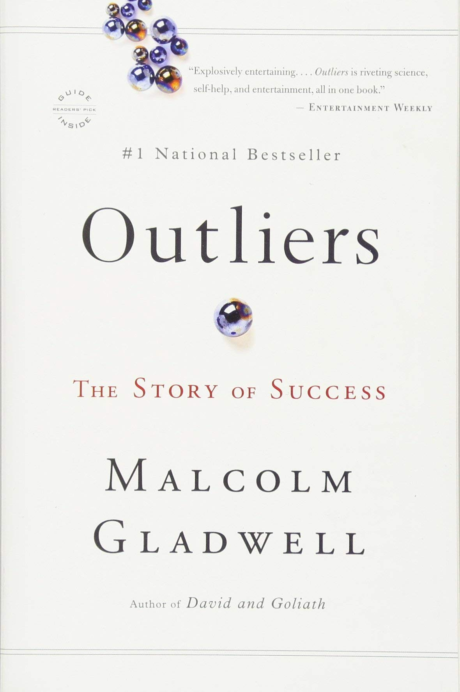
OutliersMalcolm Gladwell · 2008No one makes it alone. Success = talent + 10,000 hours + hidden opportunity + cultural legacy + being born at 8 min · 6 lessons · free summary Predictably IrrationalDan Ariely · 2008We're not crazy - we're predictably irrational. Learn the patterns and you can outsmart yourself.8 min · 6 lessons · free summary
Predictably IrrationalDan Ariely · 2008We're not crazy - we're predictably irrational. Learn the patterns and you can outsmart yourself.8 min · 6 lessons · free summary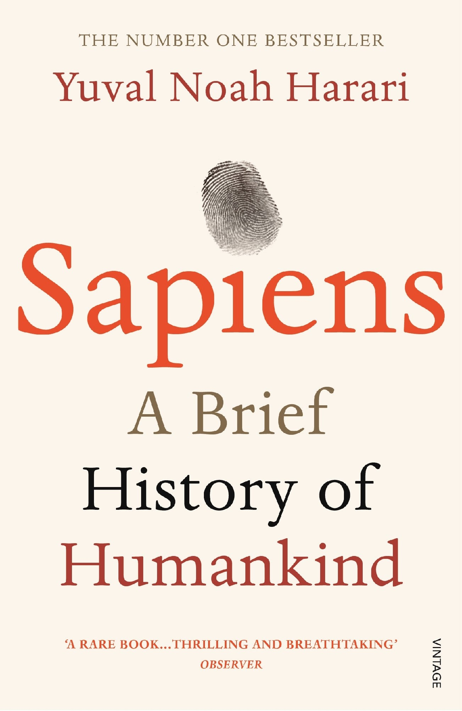
SapiensYuval Noah Harari · 2011Humans rule the world because we're the only animal that can cooperate flexibly in huge numbers - around share8 min · 6 lessons · free summary Seeking WisdomPeter Bevelin · 2007Wisdom is mostly avoiding stupidity: the book catalogues the traps of thinking and the questions that disarm t7 min · 9 lessons · free summary
Seeking WisdomPeter Bevelin · 2007Wisdom is mostly avoiding stupidity: the book catalogues the traps of thinking and the questions that disarm t7 min · 9 lessons · free summary Stumbling on HappinessDaniel Gilbert · 2006Your imagination is a faulty time machine: it predicts how you'll feel later, and it is systematically wrong - 8 min · 6 lessons · free summary
Stumbling on HappinessDaniel Gilbert · 2006Your imagination is a faulty time machine: it predicts how you'll feel later, and it is systematically wrong - 8 min · 6 lessons · free summary SupercommunicatorsCharles Duhigg · 2024Every discussion is secretly one of three conversations - practical, emotional, or social. Supercommunicators 8 min · 6 lessons · free summary
SupercommunicatorsCharles Duhigg · 2024Every discussion is secretly one of three conversations - practical, emotional, or social. Supercommunicators 8 min · 6 lessons · free summary SwitchChip Heath & Dan Heath · 2010Change fails when you only talk to the Rider. Direct the Rider, motivate the Elephant, and shape the Path.11 min · 8 lessons · free summary
SwitchChip Heath & Dan Heath · 2010Change fails when you only talk to the Rider. Direct the Rider, motivate the Elephant, and shape the Path.11 min · 8 lessons · free summary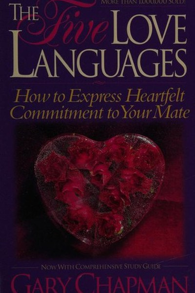
The 5 Love LanguagesGary Chapman · 1992Chapman's classic: we each give and receive love in five different languages - words of affirmation, acts of s8 min · 6 lessons · free summary The AlchemistPaulo Coelho · 1988When you want something, all the universe conspires in helping you achieve it - but you must dare the journey.9 min · 7 lessons · free summary
The AlchemistPaulo Coelho · 1988When you want something, all the universe conspires in helping you achieve it - but you must dare the journey.9 min · 7 lessons · free summary The Apology EngineUnknown · 2026Everyone makes mistakes. Almost nobody repairs them well: and the difference between a relationship that survi10 min · 10 lessons · free summary
The Apology EngineUnknown · 2026Everyone makes mistakes. Almost nobody repairs them well: and the difference between a relationship that survi10 min · 10 lessons · free summary The Argumentative IndianAmartya Sen · 2005Nobel laureate Amartya Sen argues that India's true heritage is argument - and that a nation which questions s8 min · 6 lessons · free summary
The Argumentative IndianAmartya Sen · 2005Nobel laureate Amartya Sen argues that India's true heritage is argument - and that a nation which questions s8 min · 6 lessons · free summary The Comparison TaxUnknown · 2026Comparison feels like information. It is actually a tax: on focus, on joy, and on the decade you were given to10 min · 10 lessons · free summary
The Comparison TaxUnknown · 2026Comparison feels like information. It is actually a tax: on focus, on joy, and on the decade you were given to10 min · 10 lessons · free summary The Defining DecadeMeg Jay · 2012Eighty percent of life's most significant moments happen by 35. The twenties are not a waiting room: they are 9 min · 10 lessons · free summary
The Defining DecadeMeg Jay · 2012Eighty percent of life's most significant moments happen by 35. The twenties are not a waiting room: they are 9 min · 10 lessons · free summary The DhammapadaGautama Buddha · -300The opening verse is the whole teaching: everything is mind-made; guard the mind and you guard your world.7 min · 10 lessons · free summary
The DhammapadaGautama Buddha · -300The opening verse is the whole teaching: everything is mind-made; guard the mind and you guard your world.7 min · 10 lessons · free summary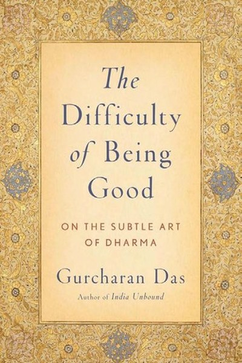
The Difficulty of Being GoodGurcharan Das · 2009Gurcharan Das reads the Mahabharata as a laboratory of moral dilemmas - envy, loyalty, lies, duty - showing th9 min · 7 lessons · free summary The Discovery of IndiaJawaharlal Nehru · 1946Nehru's sweeping love letter to India - its ancient wisdom, its invasions, its syncretism, and the long argume8 min · 6 lessons · free summary
The Discovery of IndiaJawaharlal Nehru · 1946Nehru's sweeping love letter to India - its ancient wisdom, its invasions, its syncretism, and the long argume8 min · 6 lessons · free summary The Elephant Catchers: Key Lessons for Breakthrough GrowthSubroto Bagchi · 2013Bagchi, who scaled MindTree from nothing to a billion-dollar company, maps the leaps a startup must make in sa11 min · 8 lessons · free summary
The Elephant Catchers: Key Lessons for Breakthrough GrowthSubroto Bagchi · 2013Bagchi, who scaled MindTree from nothing to a billion-dollar company, maps the leaps a startup must make in sa11 min · 8 lessons · free summary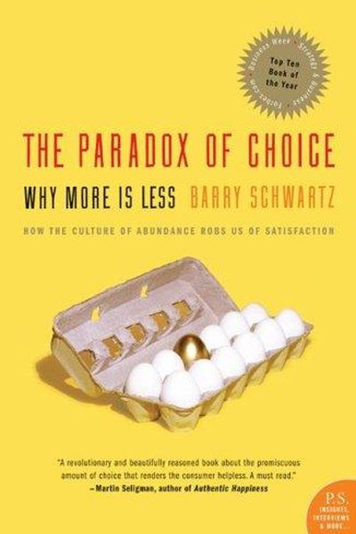
The Paradox of ChoiceBarry Schwartz · 2004More options don't free you - they freeze you. Learn to be a satisficer, not a maximizer.8 min · 6 lessons · free summary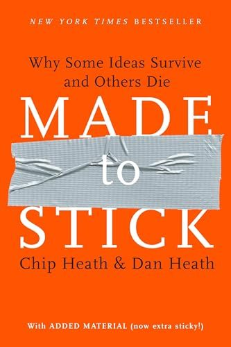
The Power of MomentsChip Heath & Dan Heath · 2017We remember peaks, pits, and transitions - not averages. Stop sanding off problems and start engineering momen8 min · 6 lessons · free summary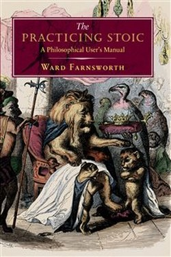
The Practicing StoicWard Farnsworth · 2018Farnsworth organises the Stoics by life problem: see clearly, want rightly, act well, endure nobly.7 min · 9 lessons · free summary The Second MountainDavid Brooks · 2019Brooks' argument that life has two mountains - the first of achievement and status, the second of commitment, 8 min · 6 lessons · free summary
The Second MountainDavid Brooks · 2019Brooks' argument that life has two mountains - the first of achievement and status, the second of commitment, 8 min · 6 lessons · free summary The Selfish GeneRichard Dawkins · 1976A breathtaking lens: organisms are survival machines for genes, and altruism is genetic self-interest in disgu7 min · 9 lessons · free summary
The Selfish GeneRichard Dawkins · 1976A breathtaking lens: organisms are survival machines for genes, and altruism is genetic self-interest in disgu7 min · 9 lessons · free summary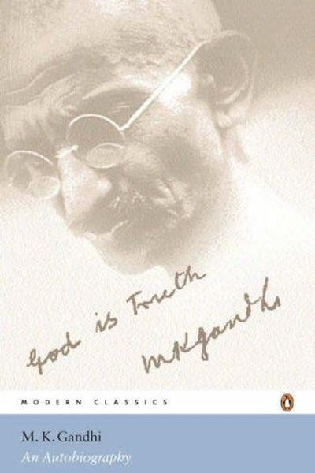
The Story of My Experiments with TruthM.K. Gandhi · 1927Gandhi's autobiography is an experiment notebook - testing truth, discipline and fearlessness in real life, an8 min · 6 lessons · free summary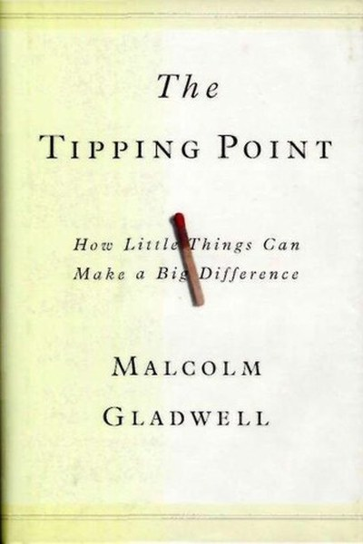
The Tipping PointMalcolm Gladwell · 2000Gladwell's classic on how ideas, products and behaviours go viral: connectors, mavens, stickiness and context 8 min · 6 lessons · free summary The Weight of MaybeUnknown · 2026Every open option is a small rent you pay all day: the unopened offer, the almost-relationship, the city you k10 min · 10 lessons · free summary
The Weight of MaybeUnknown · 2026Every open option is a small rent you pay all day: the unopened offer, the almost-relationship, the city you k10 min · 10 lessons · free summary Think and Grow RichNapoleon Hill · 1937Whatever the mind can conceive and believe, it can achieve - if you back it with burning desire, faith, plans,12 min · 9 lessons · free summary
Think and Grow RichNapoleon Hill · 1937Whatever the mind can conceive and believe, it can achieve - if you back it with burning desire, faith, plans,12 min · 9 lessons · free summary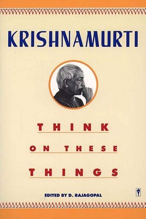
Think on These ThingsJ. Krishnamurti · 1964Question authority, your own most of all; see without the filter of memory, and you are free.7 min · 10 lessons · free summary When Breath Becomes AirPaul Kalanithi · 2016The question is not how long you live but what you live for - Kalanithi's unfinished answer, finished by love.7 min · 10 lessons · free summaryWhy I Am a HinduShashi Tharoor · 2018Shashi Tharoor defends Hinduism as a tradition of pluralism and debate - separating its philosophical wealth f8 min · 6 lessons · free summary
When Breath Becomes AirPaul Kalanithi · 2016The question is not how long you live but what you live for - Kalanithi's unfinished answer, finished by love.7 min · 10 lessons · free summaryWhy I Am a HinduShashi Tharoor · 2018Shashi Tharoor defends Hinduism as a tradition of pluralism and debate - separating its philosophical wealth f8 min · 6 lessons · free summary📖 OPEN THE FULL LIBRARY, 500 BOOKS
Every summary free. Mark lessons as read, listen in your language, share quote cards.